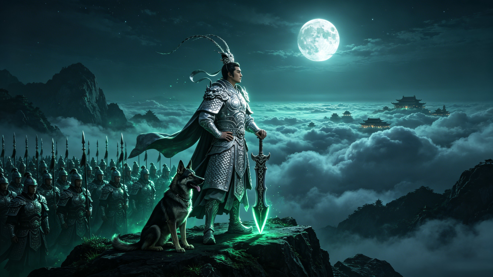

Heaven's Greatest Warrior
二郎神
Nephew of the Jade Emperor. Bearer of the third eye. The only being in all the realms who ever fought the Monkey King — and held his ground.
Erlang Shen is the son of Yunhua, the Jade Emperor's sister, and a mortal scholar named Yang Tianyou. When the Jade Emperor discovered his sister had married a mortal, he imprisoned her beneath Mount Tai — a crime that forged Erlang Shen's destiny. As a boy, he was rescued and raised by the Taoist immortal Yuding Zhenren, who taught him the sacred arts of combat and transformation. Unlike his uncle's celestial bureaucracy, Erlang Shen earned every power he possessed through discipline and devotion.
Between his brows sits the Heavenly Eye — a gift that allows Erlang Shen to perceive truth beneath any illusion. When Wukong transformed into a temple, Erlang Shen's third eye saw through it instantly. When demons disguise themselves as humans, his eye pierces the mask. It is not merely sight — it is discernment, the warrior's ability to read the soul behind the form. In a heavenly court of intrigue and deception, Erlang Shen sees what others cannot.
When 100,000 celestial soldiers failed to subdue Sun Wukong, the Jade Emperor turned to his nephew. Erlang Shen descended from Guanjiangkou with his 1,200 grass-headed divine soldiers — not to overwhelm the Monkey King, but to face him as an equal. What followed was the greatest duel in Chinese mythology: two masters of seventy-two transformations, shapeshifting through hawk and fish, temple and serpent, each anticipating the other's form before it was taken. Neither won. Neither lost. They recognized in each other what heaven itself could not produce — a worthy opponent.
The bloodline of heaven, a mother imprisoned, and the immortal master who forged a warrior.
The three-pointed spear, the truth-seeing eye, the Sky-Howling Hound — weapons of a general.
Hawk against fish, temple against serpent — the greatest shapeshifting duel in mythology.
Send your words to Erlang Shen. They will be carved into jade tablets, preserved forever in the hall of the celestial general at Guanjiangkou.
Dive Deeper